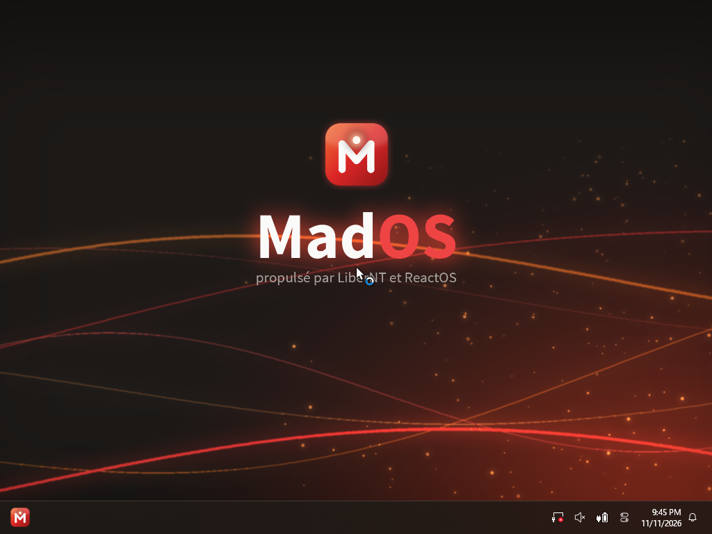
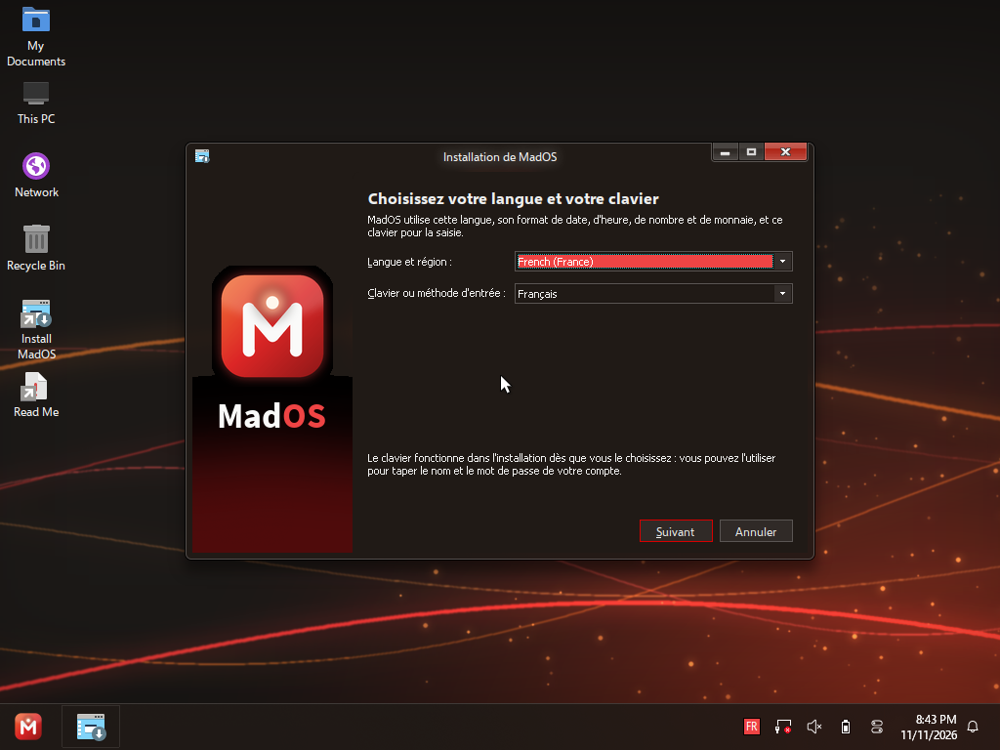
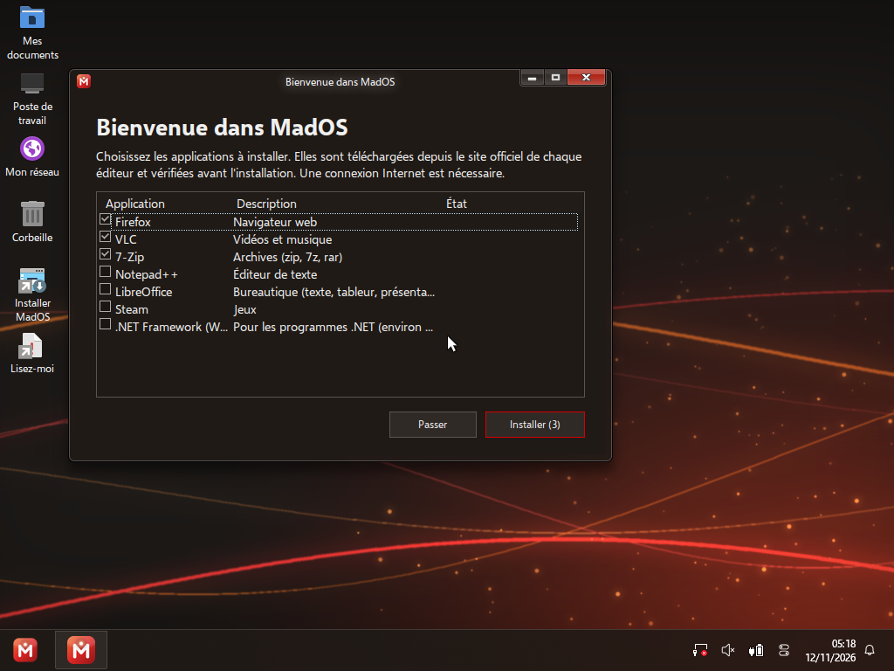
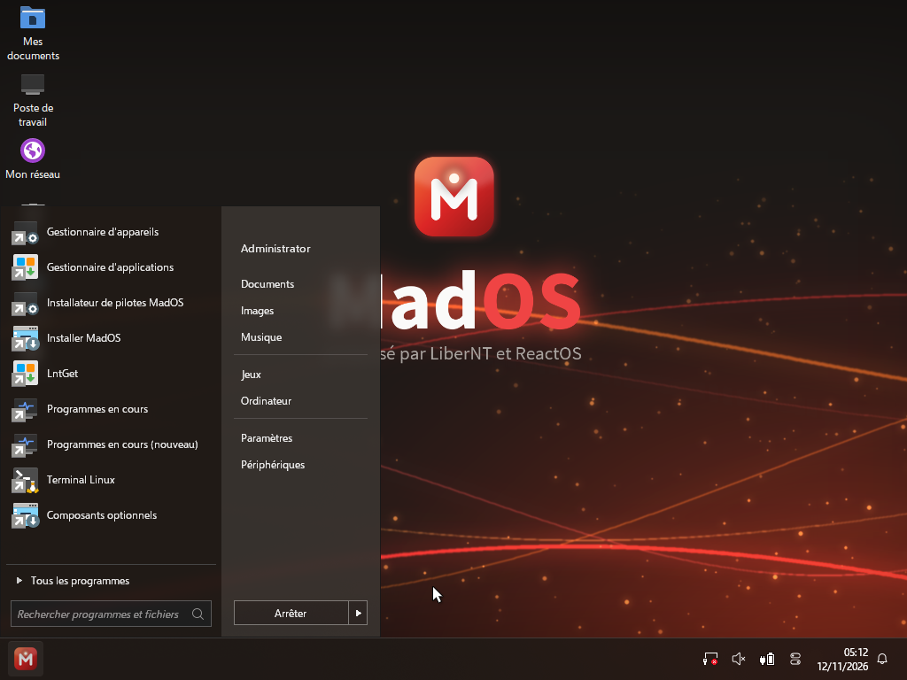
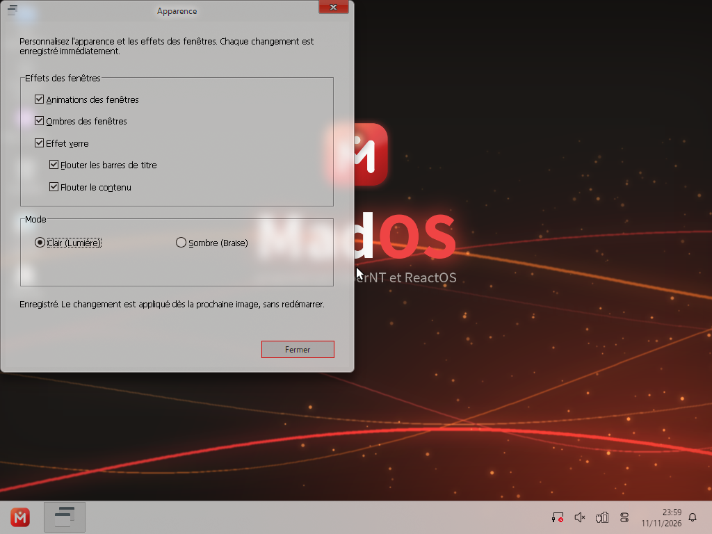
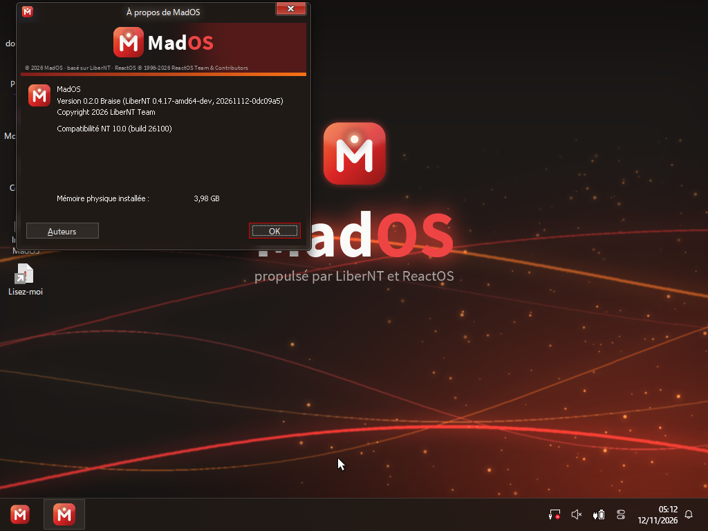

A free, lean and respectful NT operating system.
Download MadOS Source codeExperimental: try it in a virtual machine. · Français

No diagnostic data is sent by default. If you turn it on, System properties says exactly what and to whom.
Tick Firefox, VLC, LibreOffice, .NET…: MadOS downloads them from each publisher and checks their signature before installing.
French and AZERTY from the very first screen. Other languages can be picked during setup.
About 270 MB of memory at idle and 510 MB on disk. A desktop about 7 seconds after the boot logo.
A warm dark theme by default, or a light mode, switchable in Appearance.
GPL-3.0 licensed. All the code is public and every change is documented.




